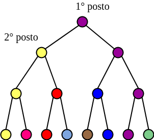
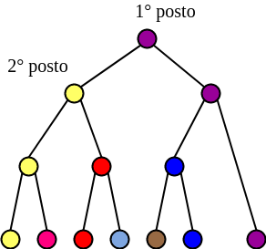
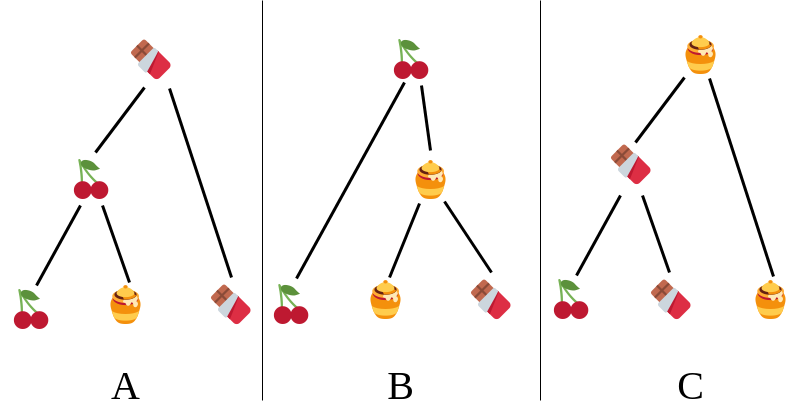

AR - Lesson 13
Indice
Sistemi di Voto
In questa parte verrà discusso e analizzato come una comunità di individui prende una decisione collettiva, senza però che i singoli possano in qualche modo scambiare alcuna informazione. Contrariamente al fenomeno dell'Herding gli individui prendevano una scalta sulla base delle scelte degli individui precedenti. Nei sistemi di voto si vuole estrapolare un'informazione dalla rete tramite una votazione che in qualche modo rispecchi le informazioni di tutti, però i singoli individui decidono in maniera del tutto indipendente dagli altri, ovvero senza poter osservare le decisioni degli altri (e quindi senza avere la possibilità di inferire informazioni aggiuntive).
Un Modello Semplice di Decision Making: Simultaneous, Sincere Voting
Definiamo un primo modello molto semplice di decision making individuale.
Gli individui devono scelgiere trai sole due alternative X o Y.
Una delle due è migliore dell'altra.
Indichiamo con X > Y se l'alternativa X è migliore di Y, viceversa con Y > X.
Per seimplicità assumiamo inizialmente l'equiprobabilità che un'alternativa sia migliore di un'altra
\[
\mathcal{P}(X > Y) = \mathcal{P}(Y > X) = \frac{1}{2}
\]
Dopodiché ogni individuo riceve un segnale privato indipendente, che suggerisce quale delle due è la scelta migliore.
Inidichiamo con x il segnale che suggerisce X, e con y il segnale che suggerisce Y.
Indichiamo con \(q > 1/2\) la probabilità di ricevere un segnare corretto
\[
\mathcal{P}(x \vert X > Y) = \mathcal{P}(y \vert Y > X) = q > \frac{1}{2}
\]
A differenza delle cascate informative, le decisioni dei singoli vengono prese simultaneamente, senza poter osservare le scelte degli altri.
In assenza di ulteriori informazioni, ogni individuo non può che scegliere un'alternativa in accordo al proprio segnale privato.
Molto importante assumere che le scelte degli individui siano sincere, ovvero sempre in accordo al proprio segnale privato!
Supponiamo di ricevere il segnale privato x.
Per la regola di Bayes e per la regola delle probabilità totali possiamo scrivere la probabilità che X sia la scelta corretta avendo ricevuto
il segnale x come
perciò è naturale concludere che a ogni individuo conviene votare in accordo al proprio segnale privato.
A tal proposito il Marchese di Condorcet nel 1785 scrisse a riguardo ciò che oggi è noto come il Teorema della Giuria di Condorcet, che afferma
Teorema della Giuria di Condorcet
Senza perdita di generalità supponiamo cheXsia l'alternativa migliore. Allora al crescere dei votanti, la frazione di individui che votano a favore diXtende quasi sicuramente alla probabilità \(q > 1/2\) di ricevere il segnalex. Di conseguenza, la probabilità che la maggioranza voti l'alternativa correttaXtende ad 1 con l'aumentare dei votanti.
Più formalmente, sia \(k\) il numero dei votanti e \(r_i\) il voto dell'individuo \(i\)-esimo. Allora se
X > Y\[ \lim_{k \rightarrow \infty} \frac{\vert \lbrace 1 \leq i \leq k : r_i = X \rbrace \vert}{k} = q\\ \lim_{k \rightarrow \infty} \mathcal{P}\left( \frac{\vert \lbrace 1 \leq i \leq k : r_i = X \rbrace \vert}{k} = q \right) = 1 \]
Questo teorema mostra come il modello (semplice) di decision making appena definito manifesta la "saggezza della folla" descritta da James Surowiecki nel libro The Wisdom of Crowds.
Insincere Voting
Il teorema di Condorcet si basa sulla forte assunzione che i voti degli individui siano sinceri.
Questa assuzione sembra abbastanza ragionevole.
Infatti, in assenza di informazioni condivise, un individuo non può inferire nulla che possa in qualche modo indirizzare verso un'alternativa.
Perciò per quale motivo si dovrebbe votare in disaccordo col proprio segnale privato?
In realtà esistono molte situazioni in cui è più conveniente votare in disaccordo al proprio segnale privato, ovvero in maniera non sincera,
anche se non è possibile osservare le scelte degli altri.
Certamente la precedentemente affermazione è controintuitiva, perciò è necessario fare chiarezza con alcuni esempi.
Esempio Urne - Maggioranza
Siamo in una situazione in cui abbiamo un'urna UG con 10 palline gialle, e un'urna UV con 9 palline verdi e 1 gialla.
Viene scelta totalmente a caso (con probabilità \(1/2\)) un'urna tra le due.
Ci sono 3 giocatori che pescano una pallina dall'urna, la reinseriscono e infine simultanemante devono decidere se secondo loro l'urna è UG o UV.
Se la maggioranza ha votato l'urna esatta, allora vincono tutti, altrimenti tutti perdono.
Indichiamo con v l'evento "estraggo una pallina verde" e con g "estraggo una pallina gialla", ovvero i segnali privati che un giocatore può ricevere.
Avremo quindi le seguenti probabilità
Ai giocatori conviene rispondere in accordo a ciò che pescano.
Proviamo a immedesimarci nei panni di uno dei giocatori.
So che vinceremo se almeno due di noi indoviano la risposta esatta.
Perciò quando la mia risposta è realmente influenzate?
Ovviamente la risposta è quando le risposte degli altri due sono discordi, in quanto se sono concordi avranno già raggiunto la maggioranza e la mia risposta non sarà influente nell'esito del gioco.
Però se le due risposte degli altri giocati sono discordi posso inferire (assumendo che abbiano risposto sinceramente) che almeno uno dei due ha estratto una pallina verde:
ovvero l'urna è UV.
Posso quindi applicare il seguente ragionamento:
- se i due voti sono concordi, qualsiasi siano, il mio voto è ininfluente, perciò posso votare
UVe l'esito non cambia. - se i due voti sono discordi, allora l'urna è
UV, quindi il mio voto è essenziale per vincere. Mi conviene votareUVindipendentemente da ciò che pesco.
A questo punto è facile convincersi, sempre sotto l'assunzione che gli altri votino in maniera sincera, che votare UV massimizza sempre la mia probabilità di vittoria.
Mi conviene votare in maniera non sincera.
Esempio Giuria - Unanimità
Consideriamo la situazione in cui una giuria deve decidere se un imputato è innocente I o colpevole C.
Supponiamo inoltre che la colpevolezza e l'innocenza dell'imputato siano equiprobabili, ovvero che
\[
\mathcal{P}(I) = \mathcal{P}(C) = \frac12
\]
La colpevolezza dell'imputato viene presa all'unanimità, ovvero tutti devono essere d'accordo per condannare l'inputato.
Non si vuole avere nessun dubbio della sua colpevolezza, se anche solo un giudice vota I allora l'accusato viene dichiarato innocente,
oltre ogni ragionevole dubbio.
Ancora una volta ogni giudice riceve un segnale privato: i suggerisce I e c suggerisce C, con probabilità di occorrenza
\[
\mathcal{P}(i \vert I) = q > \frac12\\
\mathcal{P}(c \vert C) = q > \frac12
\]
Perciò se \(S\) è l'insieme dei voti dei giurati, non è sufficiente avere che \(\mathcal{P}(C \vert S) > 1/2\) per condannare l'imputato,
sempre per evitare ogni dubbio.
Sempre immedesimandoci in un "giocatore" (un giurato), ci si chiede quando il mio voto è realmente influente nell'esito finale.
Supponiamo di essere in una giuria di \(k\) giurati, nella quale tutti (tranne me) votino in accordo al proprio segnale privato:
tutti gli altri fanno una votazione sincera.
Calcoliamo la probabilità che l'imputato sia colpevole sapendo che solamente uno abbia ricevuto un segnale d'innocenza i.
All'aumentare dei votanti avremo che
\[
\lim_{k \rightarrow \infty} \mathcal{P}(C \vert ic^{k-1}) = \lim_{k \rightarrow \infty} \frac{ 1 }{ 1 + \left(\frac{1-q}{q}\right)^{k-2} } = 1
\]
perchè dato che per ipotesi \(q > 1/2\) allora \(\frac{1-q}{q} < 1\).
Anche in questo caso posso dedurre una strategia che massimizza la probabilità di ottenere un risultato corretto:
- Se fra gli altri giurati c’è qualcuno che è in favore dell’innocenza, che io voti per la colpevolezza o per l’ innocenza non alter il verdetto.
- Se invece gli altri giurati sono in favore della colpevolezza, allora è proprio dal mio voto che dipende il verdetto.
Però abbiamo visto che anche se sono l'unico ad avere il segnale
i, quasi sicuramente l'imputato è colpevole. Perciò conviene comunque che io votiCcolpevole.
Anche in questo esempio, assumendo che gli altri votino sinceramente, l'alternativa che massimizza la probabilità di successo è che voti C colpevole,
a prescindere da quale sia il mio segnale privato (alla faccia di "oltre ogni ragionevole dubbio"…).
Sistema di Voto Individuale
Finora abbiamo visto sistemi di voto in cui ci sono solamente due alternative, nelle quali la decisione finale si prende per maggioranza oppure all'unanimità (per una delle due alternative).
Generalmente però è richiesto di scegliere una preferenza su più alternative, oppure specificare un classifica (o ranking) di preferenze.
Un sistema di voto è un insieme di regole utili per derivare una decisione collettiva a partire da un insieme di decisioni individuali.
Indichiamo con \(A = \lbrace a_1, a_2, ..., a_n \rbrace\) l'insieme di \(n\) alternative possibili, e con \(V = \lbrace v_1, v_2, ..., v_k \rbrace\) l'insieme di \(k\) votanti.
Per semplicità alcune volte porremo \(A \equiv \left[ n \right]\) e \(V \equiv \left[ k \right]\).
Per prima cosa definiamo il concetto di voto dei singoli votanti. Ciascun votante \(v_h \in V\) può esprimere il suo voto in due modalità equivalenti:
- Ranking (Graduatoria)
- un ranking \(r_h\) per un votante \(v_h\) è una sequenza ordinata \(\langle a_{h1}, a_{h2}, ..., a_{hn} \rangle \in \Pi(A)\) dove \(\Pi(A)\) è l'insieme di tutte le permutazioni delle alternative in \(A\). Più precisamente gli elementi in \(r_h\) sono ordinati in ordine decrescente di preferenza, ovvero \(a_{h1}\) è il preferito di \(v_h\), \(a_{h2}\) è il secondo preferito, e così via…
- Relazione Binaria e Completa
- una relazione \(>_h\) che deve essere
- Binaria: di arietà 2, ovvero con soli due argomenti.
- Completa: definita per ogni coppia di elementi \(a, a' \in A\), \(a >_h a'\) oppure \(a' >_h a\).
- Transitiva: se \(a >_h a'\) ed \(a' >_h a''\) allora \(a >_h a''\).
- Antisimmetrica: \(a \not>_h a\).
Come già accennato le due forme possibili di espressione di un voto sono fra loro equivalenti, ovvero è sempre possibile ricavare un'espressione di voto da un'altra.
Derivare una relazione \(>_h\) da un ranking \(r_h = \langle a_{h1}, a_{h2}, ... , a_{hn} \rangle\) è immediato: per ogni \(i, j \in \left[ n \right]\) tali che \(j > i\) rispetto a \(r_h\), poniamo \(a_{hi} >_h a_{hj}\).
Il viceversa è un po' più articolato.
Dato che \(>_h\) è completa e transitiva, certamente esiste un'alternativa \(\ell \in \left[ n \right]\) tale per ogni altra alternativa
\(j \in \left[ n \right] \setminus \lbrace \ell \rbrace\), \(a_{\ell}\) è preferita più volte rispetto ad \(a_j\), ovvero formalmente
\[
\vert \lbrace i \in \left[ n \right] : a_{\ell} >_h a_i \rbrace \vert > \vert \lbrace j \in \left[ n \right] : a_j >_h a_i \rbrace \vert
\]
A breve verrà dimostrata questa proprietà nel Lemma 1.
Una diretta e naturale conseguenza del Lemma 1 è ciò che verrà mostrato nel Lemma 2, ovvero che certamente \(j \in \left[ n \right] \setminus \lbrace \ell \rbrace\), \(a_{\ell} >_h a_j\) (dovrebbe essere immediato visualizzarlo).
A questo punto individuato tale \(\ell\), poniamo \(a_{h1} = a_{\ell}\), ed iteriamo con lo stesso procedimento sul sottoinsieme \(A \setminus \lbrace a_{\ell} \rbrace\) per individuare \(a_{h2}\), e così via…
Dimostriamo ora le proprietà appena utilizzate.
Lemma 1: se \(>_h\) è una relazione binaria completa e transitiva sull'inseme \(A = \lbrace a_1, a_2, ..., a_n \rbrace\), allora esiste un \(\ell \in \left[ n \right]\) tale che per ogni altro \(j \in \left[ n \right] \setminus \lbrace \ell \rbrace\) \[ \vert \lbrace i \in \left[ n \right] : a_{\ell} >_h a_i \rbrace \vert > \vert \lbrace j \in \left[ n \right] : a_j >_h a_i \rbrace \vert \]
Proof: per ogni \(j \in \left[ n \right]\) indichiamo con \(p_j = \vert \lbrace j \in \left[ n \right] : a_j >_h a_i \rbrace \vert\) il numero di alternative che \(a_j\) "batte" secondo il voto di \(v_h\). Certamente esisterà un esiste un \(\ell \in \left[ n \right]\) tale per ogni altro \(j \in \left[ n \right] \setminus \lbrace \ell \rbrace\) \[ p_{\ell} = \vert \lbrace i \in \left[ n \right] : a_{\ell} >_h a_i \rbrace \vert \geq \vert \lbrace j \in \left[ n \right] : a_j >_h a_i \rbrace \vert = p_j \] in quanto \(p_1, p_2, ..., p_n\) sono numeri, e quindi esiste un massimo.
Supponiamo per assurdo che esiste un \(m \neq \ell\) tale che \(p_{\ell} = p_m\). Poiché \(>_h\) è completa deve essere vero che o \(a_{\ell} >_h a_m\) oppure \(a_m >_h a_{\ell}\) (ma non entrambe_).
Se \(a_m >_h a_{\ell}\) allora per transitività certamente è vero che \(a_m\) "batte" sia \(a_{\ell}\) sia tutte le altre alternative battute da \(a_{\ell}\), ovvero che \[ \lbrace i \in \left[ n \right] : a_{\ell} >_h a_i \rbrace \cup \lbrace a_{\ell} \rbrace \subseteq \lbrace i \in \left[ n \right] : a_m >_h a_i \rbrace \] Inoltre poiché \(>_h\) è antisimmetrica, avremo che \(a_{\ell} \notin \lbrace i \in \left[ n \right] : a_{\ell} >_h a_i \rbrace\). Perciò \[ p_m \geq p_{\ell} + 1 > p_{\ell} = p_m \] Assurdo \(p_m > p_m\)!
Viceversa, se \(a_{\ell} > a_m\) riapplicando lo stesso ragionamento otterremo che \(p_{\ell} >_h p_{\ell}\), assurdo!
Perciò il valore \(\ell\) con tali proprietà è unica \(\square\).
Lemma 2: se \(>_h\) è una relazione binaria completa e transitiva sull'inseme \(A = \lbrace a_1, a_2, ..., a_n \rbrace\), e sia \(\ell \in \left[ n \right]\) tale che per ogni altro \(j \in \left[ n \right] \setminus \lbrace \ell \rbrace\) \[ \vert \lbrace i \in \left[ n \right] : a_{\ell} >_h a_i \rbrace \vert > \vert \lbrace j \in \left[ n \right] : a_j >_h a_i \rbrace \vert \] allora \(a_{\ell} >_h a_j\).
Proof: diretta conesguenza della dimostrazione del Lemma 1 \(\square\).
Siamo ora in grado di definire formalmente un sistema di voto.
Come già accennato un sistema di voto è un insieme di regole utili per derivare una decisione collettiva a partire da un insieme di decisioni individuali.
Data l'equivalenza delle due modalità di voto per il momento assumiamo che i \(k\) votanti esprimano il loro voto tramite ranking.
Un voto aggregato per \(n\) alternative e \(k\) votanti è una funzione
\begin{align*} f_{n,k} : \Pi(\left[ n \right])^k &\rightarrow \Pi(\left[ n \right])\\ \\ \begin{bmatrix} r_1\\ r_2\\ \vdots \\ r_k \end{bmatrix}& \mapsto r \end{align*}che associa a \(k\) ranking un nuovo ranking \(r\) \[ f_{n,k}(r_1, r_2, ..., r_k) = r \]
Un sistema di voto è un predicato \(\sigma\) che specifica, per ogni \(k\)-upla di ranking \((r_1, r_2, ..., r_k) \in \Pi(\left[ n \right])^k\)
le regole che devono essere rispettate dal voto aggregato \(f_{n,k}(r_1, r_2, ..., r_k)\).
Perciò un ranking \(r\) è un voto aggregato per i ranking \(r_1, r_2, ..., r_k\) se e solo se \(\sigma(r_1, r_2, ..., r_k,r)\) è vero.
Con un piccolo abuso di notazione, possiamo definire il voto aggregato sottoforma di relazioni binarie come \(f_{n,k}(>_1, >_2, ..., >_k) = \succ\). Analogamente la relazione bianria \(\succ\) è un voto aggregato per le relazioni \(>_1, >_2, ..., >_k\) se e solo se \(\sigma(>_1, >_2, ..., >_k, \succ)\) è vero.
Sistema di Voto a Maggioranza
Consideriamo un insieme di voti \(>_1, >_2, ..., >_k\) espressi come relazioni binarie.
Il sistema di voto a maggioranza è intuitivamente espresso dal seguente predicato \(\sigma_M\)
\[
\sigma_M(>_1, >_2, ..., >_k, \succ) = \forall i,j \in \left[ n \right]\\
\\
i \succ j \iff \vert \lbrace h \in \left[ k \right] : i >_h j \rbrace \vert > \vert \lbrace h \in \left[ k \right] : j >_h i \rbrace \vert
\]
Ovvero se il numero di votanti che preferiscono \(i\) a \(j\) è maggiore di quelli che preferiscono \(j\) ad \(i\): \(i\) è preferito a \(j\) dalla maggioranza dei votanti.
Questo sistema di voto è molto semplice e intuitivo, e funziona bene finché ci sono due sole alternative.
Quando sono più di due però possono occorrere incoerenze.
Consideriamo come esempio quello in cui tre amici A, B e C vanno in campeggio, e dato che hanno un budget limitato devono scegliere se
comprare cioccolata 🍫, miele 🍯 o marmellata 🍒.
Le rispettive graduatorie sono:
A: 🍫 \(>_A\) 🍒 \(>_A\) 🍯.B: 🍒 \(>_B\) 🍯 \(>_B\) 🍫.C: 🍯 \(>_C\) 🍫 \(>_C\) 🍒.
Tuttavia se proviamo a ricavare un voto aggregato \(\succ\) secondo il predicato \(\sigma_M\) otteremo una contraddizione. Inffati
- 🍫 è preferita a 🍒 due volte su tre \(\implies\) 🍫 \(\succ\) 🍒
- 🍒 è preferita a 🍯 due volte su tre \(\implies\) 🍒 \(\succ\) 🍯
- 🍯 è preferito a 🍫 due volte su tre \(\implies\) 🍯 \(\succ\) 🍫
Ovvero si ottiene che
🍫 \(\succ\) 🍒 \(\succ\) 🍯 \(\succ\) 🍫
Assurdo!
Tale relazione non è nemmeno transitiva, infatti anche se è vero che 🍫 \(\succ\) 🍒 e 🍒 \(\succ\) 🍯, non è vero che 🍫 \(\succ\) 🍯.
Tale contraddizione descrive il cosiddetto Paradosso di Condorcet che afferma
anche se le relazioni binarie individuali sono transitive, la relazione binaria collettiva ottenuta dalla loro aggregazione può non essere transitiva.
Sistema di Voto a Torneo
Abbiamo visto che il voto a maggioranza soffre di problemi di coerenza quando ci sono più di due alternative da votare.
Però è molto stabile nel caso di sole due scelte, perciò può essere usato come punto di partenza per costruire un nuovo sistema di voto che non soffre del paradosso di Condorcet.
Tale sistema è il cosiddetto sistema a Torneo. In tale sistema si effettuano degli "scontri" tra coppie di alternaitve, e chi vince procede avanti nel torneo, iterando gli scontri finché non si sarà generata una classifica finale.

Figura 1: Esempio torneo.
Se le \(n\) alternative sono dispari, una di esse passerà direttamente ad una fase del torneo più avanzata, in modo da ottenere sempre scontri tra due sole alternative.

Figura 2: Torneo con 7 alternative. Quella viola passa direttamente al secondo scontro.
Se i \(k\) votanti sono dispari ci sarà sempre un vincitore.
Nel caso di \(k\) pari possono accadere pareggi, in quel caso supponiamo di avere un metodo imparziale per rompere la simmetria e proclamare un vincitore, per esempio lanciando una moneta.
Importante osservare che in un torneo non avvengono tutti gli scontri possibili, bensì solamente quelli programmati da un'agenda.
Ovvero prima del torneo si pianificano i vari scontri che verranno fatti.
È facile convincersi che l’agenda può avere un ruolo determinante nel decretare il vincitore. Per esempio consideriamo ancora l'esempio della cioccolata 🍫, miele 🍯 e marmellata 🍒. Ognuo propone una diversa sequenza di scontri:
Apropone l’agenda secondo la quale il primo scontro è 🍒-🍯, e il vincitore si scontrerà con 🍫.Bpropone l’agenda secondo la quale il primo scontro è 🍯-🍫, e il vincitore si scontrerà con 🍒.Cpropone l’agenda secondo la quale il primo scontro è 🍫-🍒, e il vincitore si scontrerà con 🍯.

Figura 3: Gli esiti dei tornei secondo le tre diverse agende.
Ciascun amico ha proposto un'agenda che porta alla vittoria il proprio prodotto preferito! Purtroppo il sistema di voto a torneo è sensibile al cosiddetto Strategic Agenda Setting.